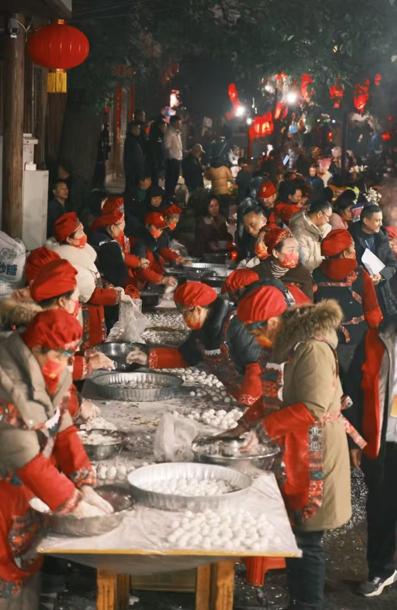

元宵
历史背景
元宵节，又称上元节，庆祝的是农历正月十五日，是元宵的最后一个节日，标志着 元宵庆祝活动的结束。元宵节的起源可以追溯到西汉时期，当时，汉武帝曾命令在 这一天举行祭天仪式。元宵节也有与火焰有关的传统，早期的灯会活动既是祭天的 一部分，也逐渐演变为大众娱乐活动。到了唐代，元宵节的灯会逐渐盛大，民间开 始举办各种形式的灯谜活动，灯笼成为了元宵节的象征。元宵节除了是一个宗教与 祭祀的节日，也逐渐转变为全民欢庆的节日。
文化意义
元宵节是中国传统文化中的团圆节日，象征着家庭和睦与幸福。灯会是元宵节最具 代表性的活动，家家户户悬挂灯笼，城市街头也会举行大型的灯展，灯笼的造型千 奇百怪，色彩斑斓。元宵节的另一大特色是猜灯谜，寓意着智慧与好运。吃元宵（汤 圆）是元宵节的传统食物，汤圆的圆形象征着团圆与和谐美满。元宵节不仅是元宵的 延续，它还传递了人们对未来一年美好生活的期许和对家人团聚的珍视。